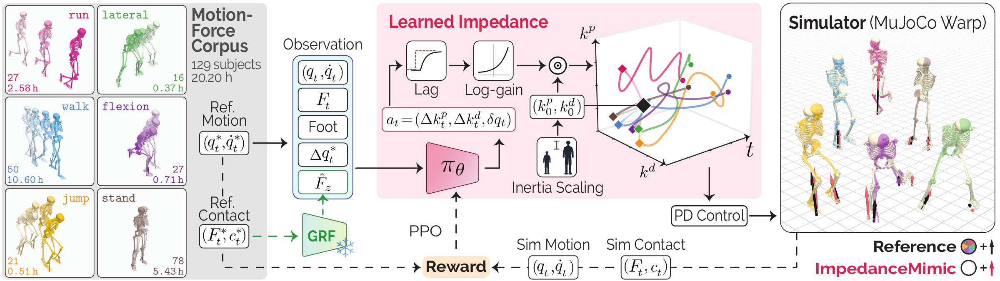

ImpedanceMimic Learned Impedance as Action Space for Force-Accurate Motion Imitation
Full paper under review. Earlier version accepted at NeurIPS 2026 PhysWorldAI and Sim2Science Workshops.
Recovering the forces behind a motion is ill-posed: different controllers can reproduce the same movement while exerting different contact forces. Most motion-imitation methods drive the simulated humanoid with fixed-gain proportional–derivative (PD) controllers, which we show enforce a compromise between tracking the motion and the resulting forces. We present ImpedanceMimic, a motion-imitation reinforcement-learning policy that outputs per-joint stiffness, damping and position setpoints, supervised by force measurements withheld at inference. Across 129 participants, nine datasets and six diverse activities from lunges to jumping, ImpedanceMimic outperforms fixed-gain PD, direct torque and muscle actuation on kinematic and force tracking, and approaches a dedicated motion-to-force regressor. With gains learned as multiples of inertia-scaled priors, our policy is the first to drive subject-scaled biomechanical models for every participant, without anthropometric input, and transfers zero-shot to new human and robot bodies. The learned impedance is an activity-structured, morphology-invariant encoding of motor state that generalizes to activities withheld from training. It occupies a low-dimensional, interpretable space in which stiffness scales with load and damping anticipates unloading.
One policy, six activities, 130 bodies
Joint angles and vertical force: reference (black) vs. ImpedanceMimic (red).
ImpedanceMimic (bone) on the reference (ghost). Forces: measured (black), simulated (red).
Learned stiffness kp vs. damping kd per joint; black ◆ = nominal gains.
Method

Results
| Method | walk | run | stand | lateral | flexion | jump | Mean | ||||||||||||||
|---|---|---|---|---|---|---|---|---|---|---|---|---|---|---|---|---|---|---|---|---|---|
| Ep.↑ | q↓ | FZr↑ | Ep.↑ | q↓ | FZr↑ | Ep.↑ | q↓ | FZr↑ | Ep.↑ | q↓ | FZr↑ | Ep.↑ | q↓ | FZr↑ | Ep.↑ | q↓ | FZr↑ | Ep.↑ | q↓ | FZr↑ | |
| Seen subjects, held-out clips | |||||||||||||||||||||
| GaitDynamics* | – | – | 1.00 | – | – | 1.00 | – | – | .75 | – | – | .90 | – | – | .92 | – | – | .90 | – | – | .91 |
| Fixed-PD | 99.9 | 2.48 | .95 | 99.7 | 3.36 | .96 | 97.8 | 1.34 | .36 | 95.9 | 3.77 | .85 | 91.3 | 2.76 | .63 | 73.6 | 3.76 | .64 | 93.0 | 2.91 | .73 |
| Torque | 99.7 | 2.33 | .98 | 99.8 | 3.51 | .96 | 99.6 | 2.33 | .64 | 97.6 | 6.49 | .89 | 96.8 | 4.62 | .73 | 78.9 | 7.61 | .74 | 95.4 | 4.48 | .82 |
| Muscle | 98.6 | 2.72 | .97 | 99.7 | 3.84 | .98 | 93.2 | 2.14 | .52 | 92.4 | 8.91 | .89 | 68.2 | 12.3 | .62 | 56.4 | 13.2 | .62 | 84.8 | 7.18 | .77 |
| PHC | 98.7 | 9.52 | .35 | 96.1 | 11.8 | .52 | 97.8 | 7.91 | .21 | 94.8 | 12.7 | .53 | 83.6 | 13.1 | .52 | 68.4 | 15.5 | .44 | 89.9 | 11.8 | .43 |
| ImpedanceMimic | 100 | 1.66 | .98 | 100 | 2.24 | .99 | 99.7 | 1.07 | .56 | 99.9 | 3.11 | .91 | 97.7 | 2.40 | .70 | 83.8 | 3.22 | .69 | 96.9 | 2.28 | .80 |
| Unseen subjects, zero-shot | |||||||||||||||||||||
| GaitDynamics* | – | – | .99 | – | – | 1.00 | – | – | .65 | – | – | .89 | – | – | .91 | – | – | .88 | – | – | .89 |
| Fixed-PD | 99.8 | 2.75 | .94 | 98.6 | 3.31 | .96 | 99.1 | 1.35 | .49 | 93.7 | 4.02 | .78 | 86.6 | 3.19 | .52 | 71.5 | 4.18 | .48 | 91.5 | 3.13 | .70 |
| Torque | 99.8 | 2.69 | .98 | 94.2 | 3.61 | .96 | 99.8 | 2.24 | .64 | 71.4 | 8.77 | .79 | 64.3 | 5.77 | .62 | 45.7 | 6.94 | .72 | 79.2 | 5.01 | .79 |
| Muscle | 90.9 | 3.98 | .95 | 97.0 | 4.19 | .98 | 92.0 | 2.30 | .52 | 79.3 | 12.9 | .83 | 49.1 | 14.4 | .58 | 43.7 | 14.2 | .57 | 75.3 | 8.65 | .74 |
| PHC | 95.4 | 10.3 | .40 | 97.2 | 12.7 | .49 | 93.9 | 7.47 | .37 | 88.5 | 14.4 | .51 | 70.4 | 15.0 | .46 | 51.7 | 17.6 | .35 | 82.8 | 12.9 | .43 |
| ImpedanceMimic | 100 | 1.95 | .97 | 100 | 2.24 | .98 | 99.6 | .98 | .54 | 99.9 | 3.62 | .84 | 99.7 | 2.53 | .64 | 89.3 | 3.41 | .62 | 98.1 | 2.45 | .76 |
*GaitDynamics is shown in italics for reference and excluded from the ranking, since it is not a controller and serves as a reference for GRF. Ep. = episode survival before termination (%). q = joint-angle RMSE (°). FZr = Pearson correlation w.r.t. reference vertical GRF.
| Method | walk | run | stand | lateral | flexion | jump | Mean | ||||||||||||||
|---|---|---|---|---|---|---|---|---|---|---|---|---|---|---|---|---|---|---|---|---|---|
| Ep.↑ | q↓ | FZr↑ | Ep.↑ | q↓ | FZr↑ | Ep.↑ | q↓ | FZr↑ | Ep.↑ | q↓ | FZr↑ | Ep.↑ | q↓ | FZr↑ | Ep.↑ | q↓ | FZr↑ | Ep.↑ | q↓ | FZr↑ | |
| GaitDynamics* | – | – | .96 | – | – | .99 | – | – | .85 | – | – | .86 | – | – | .86 | – | – | .87 | – | – | .90 |
| Fixed-PD | 40.0 | 4.52 | .43 | 73.4 | 5.10 | .75 | 68.6 | 3.08 | .39 | 93.7 | 4.10 | .77 | 71.7 | 3.52 | .61 | 71.2 | 3.98 | .58 | 69.8 | 4.05 | .59 |
| Torque | 79.5 | 6.53 | .76 | 73.8 | 9.29 | .85 | 93.2 | 4.92 | .49 | 86.9 | 7.23 | .82 | 67.9 | 8.71 | .64 | 74.5 | 8.72 | .67 | 79.3 | 7.57 | .71 |
| Muscle | 32.8 | 12.2 | .74 | 80.6 | 8.39 | .85 | 65.0 | 7.45 | .53 | 83.3 | 10.1 | .84 | 64.0 | 11.7 | .60 | 57.5 | 13.3 | .53 | 63.9 | 10.5 | .68 |
| PHC | 41.0 | 19.2 | .36 | 66.7 | 15.0 | .41 | 43.9 | 15.6 | .29 | 89.6 | 13.6 | .50 | 73.2 | 16.0 | .44 | 61.1 | 16.0 | .36 | 62.6 | 15.9 | .39 |
| ImpedanceMimic | 87.1 | 3.43 | .66 | 95.6 | 3.55 | .92 | 91.9 | 2.34 | .64 | 98.9 | 3.41 | .82 | 80.5 | 3.06 | .65 | 83.8 | 3.48 | .65 | 89.6 | 3.21 | .72 |
*GaitDynamics is shown in italics for reference and excluded from the ranking, since it is not a controller and serves as a reference for GRF. Ep. = episode survival before termination (%). q = joint-angle RMSE (°). FZr = Pearson correlation w.r.t. reference vertical GRF.